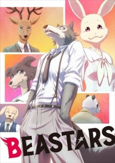
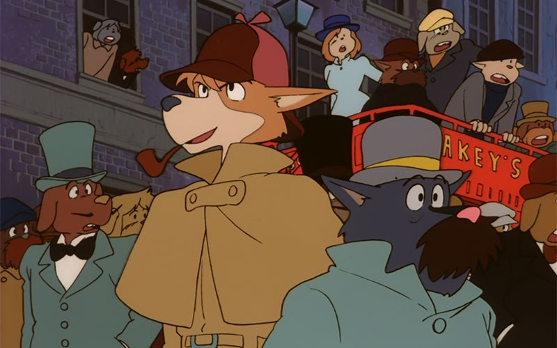
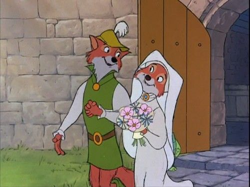
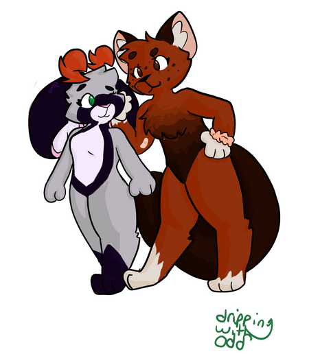
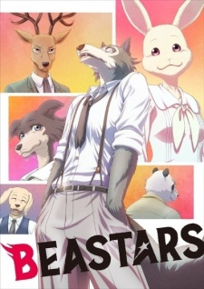
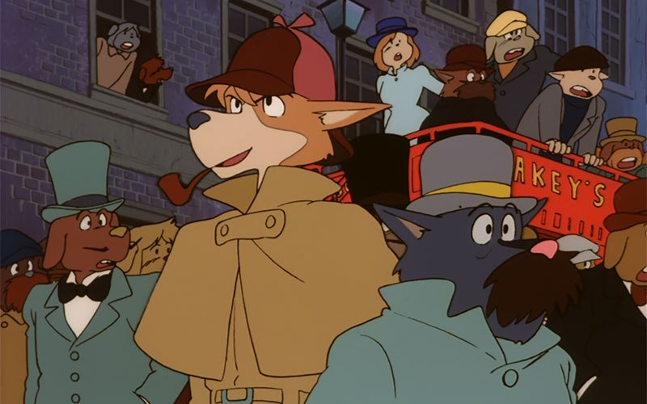
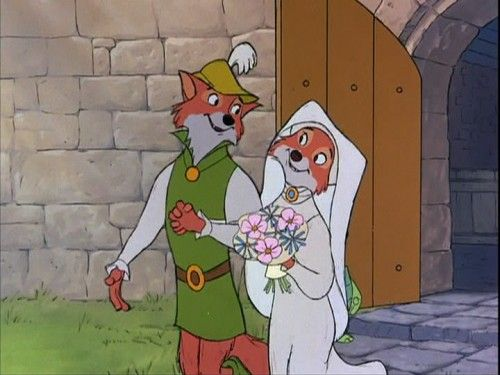
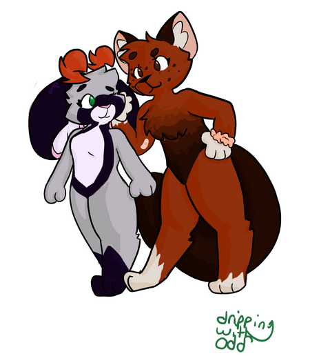

Welcome to Dewside
The Furry Fandom
What in the world is a "furry"?!
I'm glad you asked! While the exact definitition of a "furry" is a little disputed, it boils down to one thing: a person with an interest in anthropomorphized animals.
Furries may express this interest through art, writing, song, or costuming in custome made "fursuits". Furries will usually have a "fursona", or, a furry persona.
This article is a fantastic breakdown and resource for parents, newcomers, and outsiders alike.
Examples of Furry Media:
 






